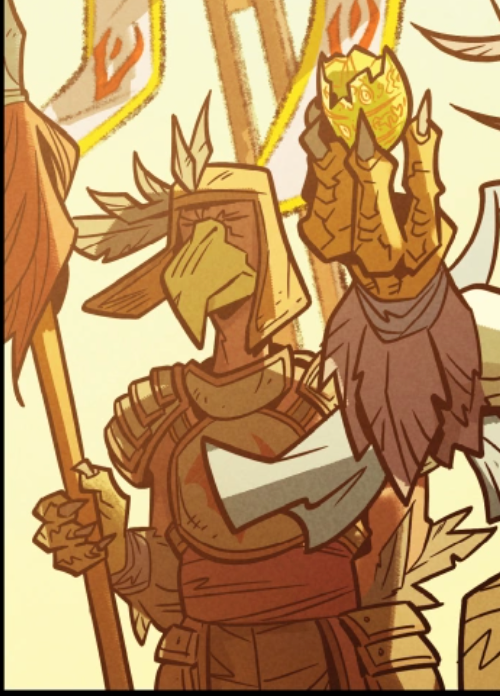

行伍旗手

侧后方低机位，斜向上看
山口破晓，右上金色侧逆光，青灰阴影
灰羽、陶红旗、暖白石
长旗、迈阶的腿与斜杆轮廓清楚，暖色山口让它有行军气氛。
本张提示词
画一名普通灰羽鸟族行伍旗手的完整全身。瘦高体型，长而窄的下弯喙，低矮方檐皮盔，三片旧木护肩，灰褐短甲，露出的两只鸟爪完整可见。参考图只提炼鸟人躯干、趾爪、分节护肩与长杆的组织。重新设计头部和服装。他扛一根细长旗杆，踏上山口最后一级石阶，身体向右前方行进，头转回左方招呼队列。旗杆从左下斜到右上，陶红色窄燕尾旗被山风吹开，只有两道缝线。镜头从侧后下方看，人物头脚与旗尖都在画内。右上方破晓金光擦亮喙、肩角与旗边，背面是清楚的青灰大阴影，远处暖白岩层和淡蓝山隘。焦点在旗布的透光纤维、握杆的爪指和木肩片磨损，衣甲细节较疏。